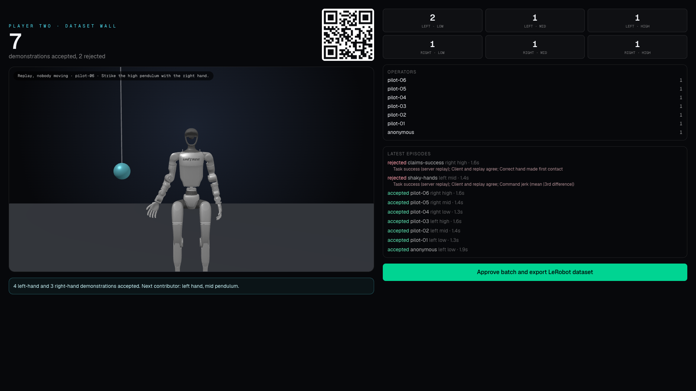

DROID
~350hours
564scenes
52buildings
A webcam is all it takes
to teach a robot.
Figures read from the public model and dataset cards, 2026-09-18.
With a leader arm or a VR rig, standing next to the robot.
Pose in the browser. Only joint angles leave the device.
To the robot's joints, within 3 degrees, measured.
MuJoCo physics, 250 Hz, in the browser via WebAssembly.
The server replays every upload.
LeRobot format.
Low confidence never becomes motion.
An unverified success never becomes data.
The server re-simulates every episode with the same deterministic physics.
Demonstrations from videos found online.
Skeleton in, robot out.

Put the QR code on the projector. Every laptop becomes a teleoperation rig. The dataset agent asks for what is missing.
HONEST NOTEReplay is open-loop playback of recorded actions. No policy is trained here. The dataset is the product.
That took a webcam.
The arm arrives next week.
The same pipeline drives a real SO-ARM101.